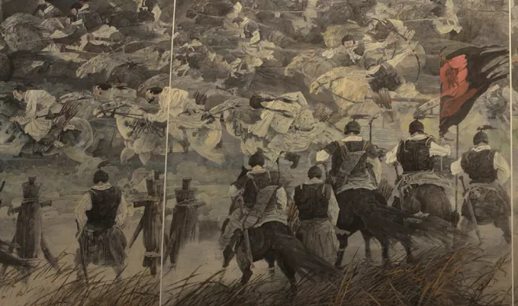
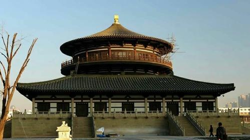
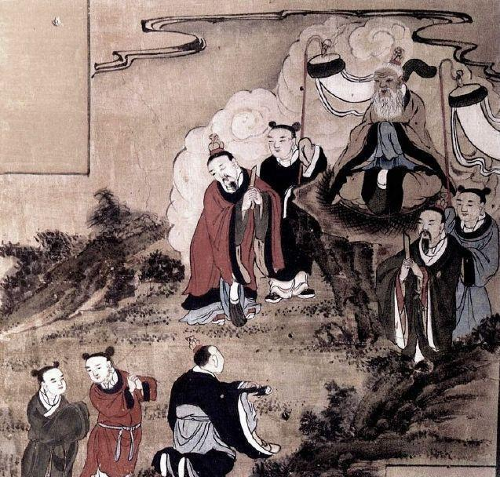
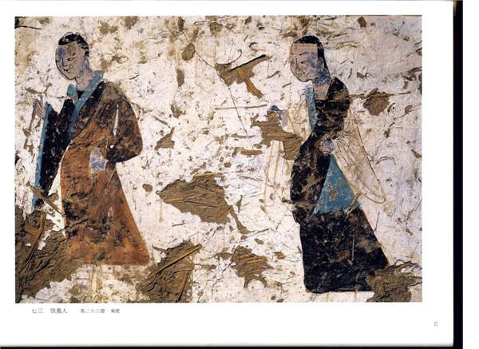

大同，历史上曾名平城。从公元 398 年至公元 494年，作为北魏的都城凡96年。称之古都，当之无愧。中 国古都学的创立者史念海先生曾经指出： “都城固然是相应的政权所统治的区域的政治中心，也应是这一区 域的文化中心……各个政权不同，各个都城的文化因之也互相差别，各有风采。” 平城亦然。因此，我们把北魏政权在平城近百年时间所创造和显现的这种都城文 化称之为平城文化。显然，史念海先生所说的文化是一种广义所指，即人们在社会历史实践中所创造的物质财富和精神财富的总和。

平城地处塞上，位于传统的汉族农耕文化与草原游牧文化接壤过渡的地带上。从赵武灵王“胡服骑射”始，这里就是一个草原文化和汉族文化冲突融合不断的地方。就行政区划言，从秦直至西晋，平城一直处于 雁门郡之辖，形式上都在中原王朝的控制之下。按《汉书·地理志》和《续汉志》的记载，至少在两汉时期，雁门 郡还有较多的汉人分布。但同时，草原游牧民族的身影也从未离开过这里。秦时“筑城武州塞内，以备胡”。西 汉初，高帝在此遭匈奴白登之围。东汉建武二年（26），卢芳之乱，匈奴单于立芳为汉帝， “掠有五原、朔方、云 中、定襄、雁门五郡”。建武二十五年（50），乌桓诣阙朝贡，乃封其渠帅为侯王君长， “皆居塞内，布于缘边诸 郡”，雁门郡即是其一。差不多同时，南匈奴内附，居于西河，亦列置诸王，助为捍戍，其中“左南将军屯雁 门”。东汉末年，曹操收纳匈奴，听任其民散居于并州的西河、太原、雁门、新兴、上郡及属于司隶的河东等六郡。受东汉政权动荡的影响，这一地区汉人数量急剧 减少， “匈奴侵边，自定襄以西，云中、雁门、西河遂空”。乌桓、匈奴等民族成为这一地区的主要居民。关 于这一地区的文化面貌，班固曾这样记述： “其民鄙朴，少礼文，好射猎。”这种文化面貌无疑也受到了草原民族风气的影响。 随着匈奴的衰微，鲜卑日益强盛，渐据有匈奴故地。永嘉四年（310），并州牧刘琨上书请封鲜卑拓跋猗 卢为代公， “帝以封邑去国悬远，民不相接，乃从琨求句注陉北之地。琨自以托附，闻之大喜。乃徙马邑、阴馆、 楼烦、繁畤、崞五县之民於陉南，更立城邑，尽献其地……帝乃徙十万家以充之”。建兴元年（313）猗卢以平城为南都，拓跋鲜卑成了这一地区的新主人。

天兴元年（398），北魏王朝正式徙都平城。作为统 治者的文化，鲜卑文化理所当然地成为主流。鲜卑文化 渗透于平城的方方面面。例如在平城的都城建筑中，尤 其是早期，有着为数不少的苑囿分布。征诸史籍，在平 城京畿的苑囿就有鹿苑、虎圈、北苑、西苑、东苑、东西 鱼池等等。这些苑囿主要承担着畜牧或狩猎的功能。 这显然是拓跋民族畜牧、狩猎习俗在经济生活中遗存 的一种表现。平城初期几代帝王频繁的田猎和以大量 牲畜赏赐群臣同样可以有力地说明这一问题。社会生 活方面也是如此。如《资治通鉴·齐纪三》永明九年 （491）条载： “魏旧制，群臣季冬朝贺，服袴褶行事，谓之 小岁。”袴褶是典型的胡服。祭天、朝贺这样重大的事情都着胡服，可见胡服之盛行。再如言， 《隋书·经籍志》： “后魏初定中原，军容号令，皆以夷语。”此处之“夷语”， 显然指鲜卑语。至于婚姻丧葬、宗教礼俗等方面，鲜卑 习俗更是屡见不鲜。以上所列仅是平城草原文化中与鲜卑相关的某些 方面。如前所追述，在拓跋鲜卑进入平城之前，平城就 已是匈奴、乌桓等草原民族经常驻足生活的地方，只是 随着鲜卑势力的壮大，尤其是猗卢以其为南都之后，拓 跋鲜卑才对平城产生更为重要的影响。而以前曾经驻 足于此的那些民族必然会留下他们本民族文化的一些 遗迹。同时，在早年北魏统一黄河流域和后来对高车柔 然的战斗中，又曾把大量其他民族的人民掳掠到平城。 虽然这些人最后大多同化为鲜卑，但是，毫无疑问，他 们到来的时候也必然带来他们本民族的文化成分，无 论这些文化成分的多少，影响时间的长短，它们都应当 是平城草原文化的一部分。拓跋鲜卑则继承和包容了 这些民族的文化成分，渐趋发展。所以，这一时期平城 的草原文化是一种以鲜卑文化为主体的文化融合体， 而绝非单纯的鲜卑文化。凭借其政治中心的地位，大量汉族人口迁来平城， 随之带来的汉族文化也影响遍及平城的经济、政治、生 活、宗教等方方面面。例如经济生活方面， “天兴初，制 定京邑……劝课农耕，量校收入，以为殿最，（道武帝） 又躬耕籍田，率先百姓”，积极发展农耕经济。在都市 建筑方面，道武帝“欲广宫室，规度平城四方数十里，将 模邺、洛、长安之制，运材数百万根”。实现了由“逐水 草，无城郭”的草原习俗到和汉人一样安土定居的转 变。其后直到迁洛之前，平城的都城建设一直没有停 止。在修建过程中，汉文化的精华之一—— — 礼制性建筑 得到了充分的重视。道武帝时期“建宗庙，立社稷”，孝 文帝时“营圜丘，方泽”，近年考古发现的明堂遗址更是 汉文化在平城建设中的影响和地位的实证。在具体 的礼俗活动上，逐渐废除诸神杂祀和西郊祭天等鲜卑 传统礼仪，祭祀诸事皆依汉制。在文化教育方面，对儒 学的宣传教育也是不遗余力。道武帝“初令《五经》群书 各置博士，增国子太学生员三千人”。孝文帝时，还在 平城设立孔庙，成为了后世在都城设置孔庙的起源。 汉族土生土长的道教也在平城取得了相当的发展。据 《魏书·释老志》载： “太祖好老子之言，诵咏不倦。天兴 中，仪曹郎董谧因献服食仙经数十篇。于是置仙人博 士，立仙坊。”到世祖拓跋焘时，更是信奉弥笃，甚而因 此改年号为太平真君， “亲至道坛，受符箓”。此后平城 诸帝即位，都要到在道坛受符箓，成为魏室常制。 当然，平城汉文化的影响也不止如此。与前述草原 文化一样，平城文化中的汉文化也是一种层次众多，内 涵丰富的汉文化。对于历史发展而言，影响最为深刻的 当是其中的儒家文化。而这种以儒家文化为主的汉文 化来源亦非单纯。陈寅恪先生在其经典著作《隋唐制度 渊源略论稿》中已有论述。简言之：其一，是河西的汉文 化，太武平凉，迁大批士民于平城，从而将河西地区保 存的汉文化带入平城；其二，便是江东南朝之汉族文 化，从定都平城始，南方士人或主动北奔，或因战争被 俘而到平城，将江东汉族文化带到平城；其三，青齐地 区的汉文化，青齐地区虽一度在刘宋之手，但青齐地区 的文化与江东文化还有不同，另成一支。平城文化中的 汉文化荟萃诸家，博采众长，是日后隋唐文化、制度的 重要渊源。对域外文化的吸取也是平城文化的一个重要方 面。细而论之，佛教首当其冲。天兴元年，拓跋珪下旨： “其敕有司，于京城建饰容范，修整宫舍，令信向之徒， 有所居止。”其后虽有太武灭佛，但未过几年，旋即恢 复，而且以更为迅猛的势头发展起来，包括西域僧人在 内的各地高僧纷纷进入平城。孝文太和年间， “京城内 寺新旧且百所，僧尼二千余人”。文成帝时在平城西郊 开始开凿了云冈石窟，经数十年营建，成了一处规模宏 大，气象非凡的佛教标志性建筑。正如《水经注·灅水》 所载： “凿石开山，因岩结构，真容巨壮，世法所希。山堂 水殿，烟寺相望，林渊锦镜，缀目新眺。”可以想见，当日 平城佛法昌盛，僧众遍地，寺院林立的盛景是何其壮 观。平城的佛教文化只是域外文化的一个方面。太延 年间，西域诸国正式开始了与平城的联系，从此，平城 与西域诸国交通频繁，使者往来不绝。在这种交往中， 西域的各种珍宝、奇术、技术不时出现在平城的生活 当中。世祖拓跋焘时，有大月氏商贩来到平城， “自云 能铸石为五色琉璃，于是采矿山中，于京师铸之。既 成，光泽乃美于西方来者……自此中国琉璃遂贱，人 不复珍之。”悦般国，在太平真君九年“遣使朝献，并送 幻人”。洛那国， “太和三年，遣使献汗血马，自此每使 朝贡”。平城时期，北魏与西域的交往远至波斯，近年来大 同的考古发掘中出土了一些波斯器物和中亚特征的胡 俑，即是这一交流的实证。例如 1965 年发现的司马金 龙墓，其官床上所雕伎乐形象，有手持琵琶、排箫、横笛 等西域乐器者，陪葬胡俑皆深目高鼻，典型的中亚人种 形象 。1981 年，大同市小站村花圪塔台发现的封和突 墓，出土有鎏金波斯银盘一件。盘中所雕之人高鼻深 目，卷发长髯。1988 年大同南郊电焊器材厂北魏墓地 发现的波斯鎏金刻花银碗、玻璃碗 。 另外，域外的音乐也大量地出现在平城，如世祖年 间， “又以悦般国鼓舞设于乐署” 。《安国乐》《疏勒乐》 《高丽乐》自北魏平北燕及通西域以后，也来到平城。 域外文化，尤其是佛教、音乐不仅对平城，而且对后世 都产生了重要的影响。
 
“古都文化应是由三个方面的文化相互融通以后 形成的。其一是古都本来固有的文化，这里面就包括其 所继承的前代文化；其二是汇集全国各地不尽相同的 地区文化；其三是吸收域外传入的外来文化。”平城文 化正是在以鲜卑为主的草原文化，以河西、江东、青齐 为代表的汉文化，以及丰富的域外文化的冲突、融合中 形成的。它们汇集于平城，互相碰撞、融合，形成了平城 特有的文化面貌。如胡服之风行，就连佛教石刻都受其 影响。云冈石窟第十七窟南壁东龛的男供养人即身着 “左袵”之袍，头戴“垂裙”之帽，正是当时流行的鲜卑服 饰 。如住，在一些汉式的建筑中，鲜卑习俗的影响也 闪现其中。《南齐书·魏虏传》载北魏的宫殿： “宫门稍覆 以屋，犹不知为重楼……胡俗尚水，又规画黑龙相盘 绕，以为厌胜。”如语言，鲜卑语不仅在鲜卑人当中流 行，汉人也多会讲鲜卑语，甚至因此而博得高官。《魏 书·术艺传·晁崇》： “崇弟懿，明辩而才不及崇也，以善 北人语，内侍左右，为黄门侍郎。”而汉语在平城当中也 已通行， “诸曹府有仓库，悉置比官，皆使通虏汉语，以 为传驿”。像刘昶这样的北投官员在平城生活了一段时间以后， “呵詈童仆，音杂夷夏” ，说话时也变成既有鲜卑语，又有汉语了。礼乐制度，除了制度夷夏并存这 一事实之外，就某一制度而言也常是夷夏混杂。如太和 十年四月孝文帝“初以法服御辇，祀于西郊” ，西郊祭天是鲜卑旧俗，但祭祀时穿的却非鲜卑服饰，而是汉族 形制的礼服了。音乐更是多方杂糅，既有汉族礼乐制度 中的雅乐，又有鲜卑自己创作的音乐，还有域外传入的 夷乐。《魏书·乐志》记载：太祖时“掖庭中歌《真人代 歌》，上叙祖宗开基所由，下及君臣废兴之迹……郊庙 宴饗亦用之”。世祖“破赫连昌，获古雅乐，及平凉州，得 其伶人、器服，并择而存之。后通西域，又以悦般国鼓舞 设于乐署”。如果说这些文字记载不够生动，那么前面 提到的墓葬发掘的实物，当可以给人以形象的说明：典 型的汉式的棺槨，波斯的金银器物，持有西域乐器、着 窄袖长襦、系带蹬靴的胡俑。融多种文化于一体的墓 葬，成了平城文化的一个缩影。多种文化在平城互相碰撞、冲突，呈现着一种多向 性的交流与融合。不只是鲜卑的汉化，同时也有汉族对 鲜卑、域外文化的吸收学习，域外文化也在鲜卑、汉族 文化的影响下出现了新的特色，而汉族文化也因为吸 收了鲜卑文化、域外文化的若干新鲜血液而获得了更 为茁壮、健康的发展。于是，当时南朝的使者这样认识 他在平城的所见所闻： “佛狸以来，稍僭华典，胡风国 俗，杂相揉乱。”这种胡汉融合的特色成了平城文化 最为突出的特征。但是，这几种文化在平城文化中的分量也不可等 量齐观。如前所言，平城自古便不是文化发达之地，生 活在这里的草原民族众多， “胡”气本重。当拓跋鲜卑将 都城迁徙于此时，鲜卑文化又一时成为主流。自“七分 国人”、 “帝室十姓”始，拓跋政权便形成了一个庞大的 鲜卑贵族集团。经过在平城近百年的发展，这个贵族集 团更为壮大，他们以及他们所代表的草原文化的存在 成为北魏政治发展的极大阻力。孝文帝本人也说： “此 间用武之地，非可文治，移风易俗，信为甚难。”为了冲 破这种阻碍，他毅然决然地走上了迁都之路。孝文帝在 洛阳大刀阔斧的改革令守旧的鲜卑贵族们如临大敌。 太和二十年，太子元恂阴召牧马，轻骑奔代；同年鲜卑 贵族穆泰、陆睿也阴谋拥朔州刺史阳平王元颐据平城 称帝。平城成了代表草原文化的鲜卑守旧势力的眷恋 号召之地。因此，平城文化当中胡族文化，也即草原文 化的影响明显更胜一筹。
平城作为都城，凭借着其政治中心的优势，将这种 胡汉融合的文化传播到当时整个中国北方地区。胡汉 融合的文化不仅是平城文化的特点，而且折射、反映了 当时中国北方地区的文化特征，是当时历史发展的主 题，其影响直至隋唐。 例如，因受统治者推崇，当时北方地区佛教发达。 明元帝即位后“又崇佛法，京邑四方，建立图像，仍令沙 门敷导民俗”，文成帝时对佛教更为提倡， “天下成风， 朝不及夕，往时所毁图寺，仍还修矣，佛像经论，皆复得 显”。又如经学，南北朝时期，南北学风各异，北方承汉 时经学遗风，这与平城统治者的教育方针有很大的关 系。道武帝时， “虽日不暇给，始建都邑，便以经术为 先”。太武帝时曾“令州郡各举才学。于是人多砥尚，儒 术转兴”。献文帝时又“诏立乡学，郡置博士二人，助教 二人，学生六十人”。从都城到地方，儒学复为兴盛。 再如开放的婚姻风气，太和七年（483 年），孝文帝曾下 诏“今自太和六年已来，买定、冀、幽、相四州饥民良口 者，尽还所亲，虽娉为妻妾，遇之非理，情不乐者，亦离 之”。而有些文化因子还被带到了洛阳，带到了邺城，带 到了长安。孝文帝虽曾明令禁止胡服，却在洛阳城中 “见车上妇人冠帽而著小襦袄者”。洛阳龙门石窟的开 凿也未完全脱离平城的影响， “景明初，世宗诏大长秋 白整准代京灵岩寺石窟，于洛南伊阙山，为高祖、文昭 皇太后营石窟二所”。其他还有，比如新都洛阳的规建 布局，比如邺城、长安、洛阳的胡俗风气等等。更有甚 者，一直影响到隋唐，促进并且成为隋唐都城文化或整 个隋唐文化的一部分。同样对于今天的大同而言，平城文化也并没有在 时过境迁中完全消失，它们中有些一直延续到现在，甚 至成为现时当地地域文化中最为明显的表征，如气势 恢宏的云冈石窟、粗犷豪放的民风…… 平城时代，可以说是大同古代历史上最为辉煌的 时刻，平城文化也相应地有着无可比拟的历史地位与 影响。我们应当加强对平城文化的研究，对这些有形无 形的文化进行深入研究，不仅能帮助我们加深对历史 的理解，而且对推动当代文化事业的发展也将大有禆 益。